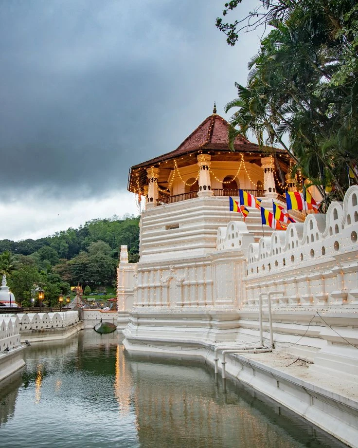
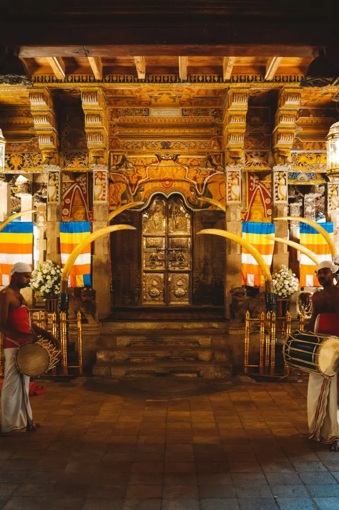
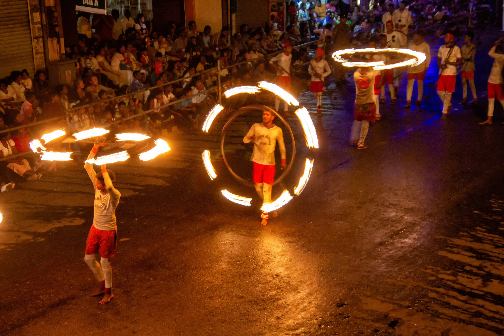

"Whoever holds the relic of the Tooth of the Buddha, holds sovereignty over the whole island of Lanka."
— Mahavamsa, Ancient Sri Lankan ChronicleKandy, known to locals as Maha Nuwara (The Great City), was the last royal capital of Sri Lanka. Nestled among the emerald hills of the central highlands, it remained an independent kingdom long after the coastal regions fell to European colonial powers.
The city's natural fortification by mountains and the Mahaweli River allowed the Kandyan kings to preserve their unique culture, arts, and political autonomy for over two centuries against the Portuguese and Dutch.
Even today, Kandy remains the spiritual heart of the nation, a place where the traditions of the ancient past continue to breathe in the modern world.
Its layout, centered around the picturesque Kandy Lake and the sacred temple complex, reflects a harmonious blend of nature and royal urban planning.

Brought from Kalinga, India, hidden in the hair of Princess Hemamala, the relic became a symbol of divine right to rule.
King Vimaladharmasuriya I established Kandy as the royal seat, bringing the Tooth Relic to the city for protection.
The kingdom successfully repelled numerous invasions by the Portuguese and Dutch, utilizing the rugged terrain.
King Kirti Sri Rajasinha oversaw the construction of much of the temple complex seen today, showcasing classic Kandyan architecture.
The kingdom was finally ceded to the British Empire through a treaty, ending over 2,300 years of monarchical rule in Sri Lanka.
The sacred city of Kandy was recognized for its immense cultural value and historical significance to the Buddhist world.

Enshrined in seven golden caskets, the tooth of the Buddha is the ultimate object of veneration for millions.
The "Dalada Maligawa" features iconic Kandyan elements like the octagonal tower (Pattirippuwa) and moonstones.
Housing ancient royal artifacts and a record of the global significance of the Tooth Relic throughout history.
Ancient rituals performed thrice daily by monks, accompanied by traditional drumming and horns.
Historically, the relic was the palladium of the state; today, it remains central to Sri Lankan national identity.
Kandy is famous for its vibrant festivals, the most spectacular being the Esala Perahera, a centuries-old tradition that brings the streets to life with music and light.

July/August. Ten days of grand processions with over 100 decorated elephants, dancers, and drummers.
May. Commemorating Buddha's birth, enlightenment, and death with elaborate lanterns and oil lamps.
June. Marking the arrival of Buddhism in Sri Lanka, celebrated with spiritual devotion across the city.
January. A significant Buddhist pageant marking the first visit of the Buddha to Sri Lanka.
Kandy is the foremost site of Buddhist pilgrimage in Sri Lanka, attracting devotees from across the globe.
The city is the cradle of traditional dance, music, and crafts like brasswork and lacquerware.
Kandy represents the resilience and cultural independence of the Sri Lankan people throughout the centuries.
Open daily from 5:30 AM to 8:00 PM. Puja ceremonies occur at 5:30 AM, 9:30 AM, and 6:30 PM.
Foreign visitors must pay an entrance fee (approx $15) which includes a guide booklet and footwear storage.
The scenic "Udarata Menike" train from Colombo offers one of the world's most beautiful rail journeys.
Remove shoes and hats. Shoulders and knees must be covered. Silence is required inside the sacred inner sanctum.
The Esala Perahera in August is the most vibrant time, though December to April offers the best weather for exploring.
Peradeniya Royal Botanical Gardens, Bahirawakanda Buddha Statue, and the Udawatte Kele Sanctuary.